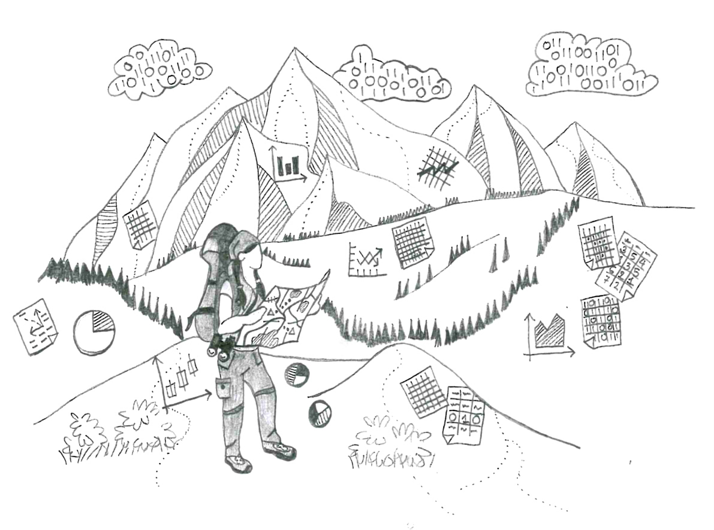
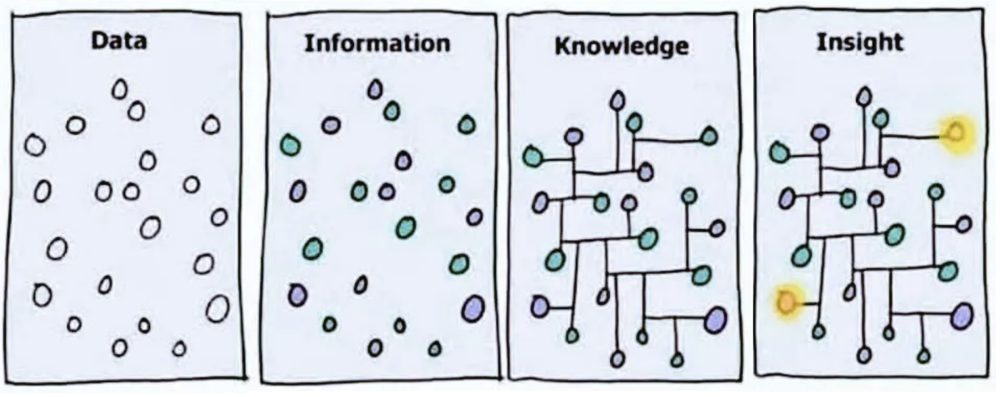
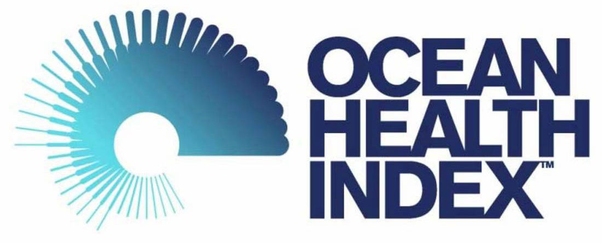
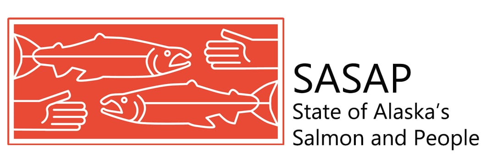

Learning Objectives
- Identify synthesis science research and different synthesis science approaches
- Implement synthesis science approaches to your research
1.1 What is Synthesis Science?

To break that down further, think of it this way: synthesis science utilizes existing data and knowledge to generate new inights. It’s like putting together puzzle pieces from different sources to create a bigger picture.
Synthesis science is fundamentally different than other types of academic research in that it does not involve collecting new or original data to conduct research or to answer a research question.
Since the ecological and environmental sciences are complex and often interdisciplinary, synthesis approaches are ideal for “understanding complexity across scales, leveraging data from various disciplines, facilitating discovery of general patterns in natural systems, and informing policy” (Halpern et al. 2023) in the ecological and environmental sciences.
1.1.1 The Value and Impact of Synthesis Research

Data is everywhere and information is more accessible than ever, but how can we leverage both data and knowledge to further our understanding of a topic and turn those insights into meaningful action? This is where synthesis research shines.
There are many studies that value the importance of synthesis for varying reasons including:
- Elevating scientific research as evidence that is influential in policy-making (Dicks, Walsh, and Sutherland 2014)
- Addressing the challenge of “information overload” (Hampton and Parker 2011)
- Delivering research products that enhance scientific knowledge in decision-making (Hampton and Parker 2011)
- Providing critical knowledge to solve environmental issues (Carpenter et al. 2009)
- Initiating new collaborations and new insights across disciplines and non-academic sectors (Hampton and Parker 2011)
As synthesis science and research synthesis approaches have been gaining prominenance in the ecological and environmental fields, researchers have sought to understand the impacts of synthesis. In particular, Wyborn et al. (2018) identified the following types of impacts from research synthesis:
- Knowledge is used to change understanding of a system or phenomena
- Knowledge changes understanding of the interconnections between actors, sectors or systems
- Knowledge is used to support a particular view of a problem
- Knowledge is used as the prime source of information to inform policy change or reform
- Knowledge use is dependent on the capacity to understand or apply knowledge in a given context
1.2 Research Synthesis Approaches
In general, research synthesis approaches include utilizing existing research on a particular topic with the intention of integrating all the finding together.
There are multiple different types of approaches such as narrative reviews, vote counting (this quantitative method has been discredited, but you may find examples of it in your research), case studies, and more. However, systematic reviews and meta-analysis are considered by some to be the “gold standard” of research synthesis and are often used at NCEAS, which is why we’re highlighting them here.
| Systematic Review | A form of synthesis to study a specific question or problem by following clear steps: finding and choosing studies, checking them carefully, and gathering information from them to create a reliable review. Note: Not all systematic reviews contain meta-analysis |
| Meta-Analysis | A form of synthesis that uses statistical and qunatitative methods to integrate and compare (quantitatively) results from a large number of individual studies. |
1.2.1 What about data?
Data is essential to synthesis in ecological and environmental research. Synthesizing data can involve combining and analyzing data from multiple sources to address research questions, to conduct a systematic review or meta-analysis, to identify patterns, and draw meaningful conclusions that don’t appear in siloed approaches.
At NCEAS, our approach tends to include combining multiple datasets from various sources, then we leverage specific expertise from diverse disciplines and researchers, and together we use those two elements to unleash new insights to answer large-scale questions.
We often see this approach with working groups at NCEAS. Working groups are teams that include researchers, agencies and organizational practitioners, and more who come together (and typically at NCEAS, a neutral ground) for focused and intensive working sessions around their research questions.
1.3 NCEAS and Synthesis Science

In 1995, the National Science Foundation (NSF) responded to the increasing calls by environmental researchers and professionals for interdisciplinary and transdisciplinary explanations, methods to connect science to applications, and ways to advance research technologies by creating NCEAS, the first synthesis center.
There are multiple other synthesis centers that have been established since, but each one has a foundational goal to use synthesis to “advance basic science, organize ecological information for decision makers concerned with pressing national issues, and make cost-effective use of the nation’s extant and accumulating database” (Hampton and Parker 2011).
Synthesis centers are specifically designed to catalyze collaboration leading to breakthrough ideas, and one way NCEAS (among other synthesis centers) achieve this are through working groups. Since its inception, NCEAS has hosted hundreds of working groups and has supported them in varying ways including: structuring group size or composition, facilitation of working sessions, supplying computing and informatics support, offering training opporunities for data-focused team members, providing a neutral space for meetings and co-working, and more. In short, NCEAS lowers the “activation energy” for working group members so that they can focus on the cross-pollination of ideas, creative thinking, and emergent research (Rodrigo et al. 2013).
1.4 Working Groups at NCEAS
1.4.1 Ocean Health Index (OHI)

The Ocean Health Index brought together a diverse group of experts including marine scientists, economists, policy experts, and more. This collaborative effort aimed to comprehensively assess the health of oceans worldwide by integrating data from various sources, including physical, biological, and socioeconomic factors.
The success of the Ocean Health Index highlights several key aspects of effective synthesis science in working groups:
- Interdisciplinary Collaboration: The working group included experts from different disciplines, fostering a holistic understanding of ocean health that goes beyond individual scientific perspectives.
- Data Integration: The Index integrated data from multiple sources and scales, ranging from local to global, to provide a comprehensive view of ocean health.
- Standardized Metrics: The working group developed standardized metrics that allowed for consistent assessment and comparison of ocean health across regions and over time.
- Policy Relevance: The synthesis findings were designed to inform policy and management decisions, demonstrating the practical applications of synthesis science in addressing real-world challenges.
- Communication and Outreach: The Index effectively communicated its findings to a wide range of stakeholders, raising awareness about ocean health and fostering engagement in conservation efforts.
1.4.2 State of Alaska’s Salmon and People (SASAP)

The SASAP project was a partnership between NCEAS and Anchorage-based Nautilus Impact Investing to create an equitable decision-making platform for salmon management through information synthesis, collaboration, and stakeholder engagement.
The project sought to address the need for accessible, up-to-date, and complete information about salmon and the factors shaping their future. It convened eight collaborative working groups consisting of leading experts at the University of Alaska and other universities, local indigenous leaders, and specialists across resource sectors – an intentional integration of western scientific perspectives and indigenous knowledge.
1.5 Priorities of Synthesis Here, Now, and Beyond
In February 2021, NCEAS hosted a virtual workshop where 127 ecologists, environmental and natural scientists convened to discuss the future priorities of synthesis science. Participants across career stages, institutions, backgrounds, and geographies were in attendance and together they identified seven research topics, and two pressing needs for conducting research synthesis practices.
Later in January 2023, dozens of scientists authored and published Priorities for synthesis research in ecology and environmental science the results of the workshop. We’ve summarized these results in the tables below.
| Research Topic | Description |
|---|---|
| Diversity, Equity, Inclusion, and Justice (DEIJ) | Environmental justice shows the link between nature and fairness for people, especially those who are disadvantaged. Unequal distribution of nature due to factors like racism impacts cities and ecosystems. Integrating DEIJ into research can improve knowledge and involve underrepresented groups, while engaging diverse communities can make research more impactful and inclusive. |
| Human and Natural systems | Environmental synthesis has given us valuable insights into environmental change, but it needs to also look at how human actions and decisions affect the environment. For example, decisions about things like population growth and greenhouse gas policies impact species and nature. Bringing together information from different fields is challenging, especially when considering different scales and practices. Synthesis science can help us better understand how humans and nature are connected, but it takes time and effort to combine ideas from different disciplines. |
| Actionable and Use-inspired science | Synthesis science in ecology and environmental science is great for helping decision makers. Methods like systematic reviews and predictive models can simplify research for environmental policy. To be more effective, scientists need to work closely with practitioners and use different types of knowledge. Communication, teamwork, and using various knowledge sources can improve how decisions are made and carried out based on scientific findings. |
| Scale | Understanding ecosystems across different sizes and time periods is hard for social-ecological research. Synthesis helps by combining information and methods from different scales, and connecting these findings to policy decisions. The challenges come from not having enough long-term data, difficulty mixing different information for analysis, and lack of skills and cooperation across scales. To overcome these challenges, more efforts are needed to collect, organize, and combine data over long periods and big areas. |
| Generality | Science looks for common rules to explain how things work, but sometimes it’s hard to find them. Synthesis science can help find these general rules and figure out when they apply. Two problems are not having enough similar studies to compare and bias in what gets studied and reported. To fix this, scientists can share their work openly, use the same rules for reporting, and make sure all types of results are published. Working together across different areas can also help find these general rules. |
| Complexity and Resilience | Ecosystems are very complicated, especially when considering things like society and economics. This complexity can make systems strong or weak. Using this complex view helps solve problems like water and food. But putting all this information together (synthesis) is hard because it depends on the situation, and finding general rules is tough. To make it work better, more scientists need to learn to work together across different areas and share their data. The goal is to understand how complexity affects ecosystems and find ways to help both people and the environment. |
| Predictability | This time of big changes in the environment makes it important to predict how ecosystems will be in the future and how they’ll affect people. Predicting things in the short term (like months or years) is common in some fields but not in ecology. Some people worry that the predictions might not be perfect, but even imperfect predictions can help us learn and make better decisions. To make predictions better in ecology, scientists can work together, use standardized methods and data, and talk to the people who use the predictions. This will help us manage natural resources more wisely. |
| Pressing Need | Description |
|---|---|
| Need for increased participant diversity and inclusive research practices | Synthesis science is most effective when it combines data, perspectives, and insights from different regions and ecosystems. By including diverse participants and creating inclusive research environments, we can better address important questions and find fair solutions to challenges. Ignoring diversity and inclusion can lead to biased syntheses and unfair outcomes. The large scope of synthesis science calls for involving people, ideas, and data from various backgrounds and languages. Efforts should be made to ensure representation, provide support, and promote open dialogue to increase diversity and inclusivity in synthesis research, ultimately fostering better understanding and more equitable outcomes. |
| Increased and improved data flow, access, and skill-building | The amount of data for synthesis science is increasing, and there are efforts to organize and combine data from various sources to answer ecological questions. Funding is needed to manage and store data properly. It’s important to think about ethical issues when using different datasets, especially if some people can’t share their data openly. Some data may be hard to access due to language or quality issues, and including diverse types of data, like traditional knowledge, can be challenging. Tools like machine learning can help make sense of different data sources. To improve data synthesis, global collaboration among diverse groups is essential. |